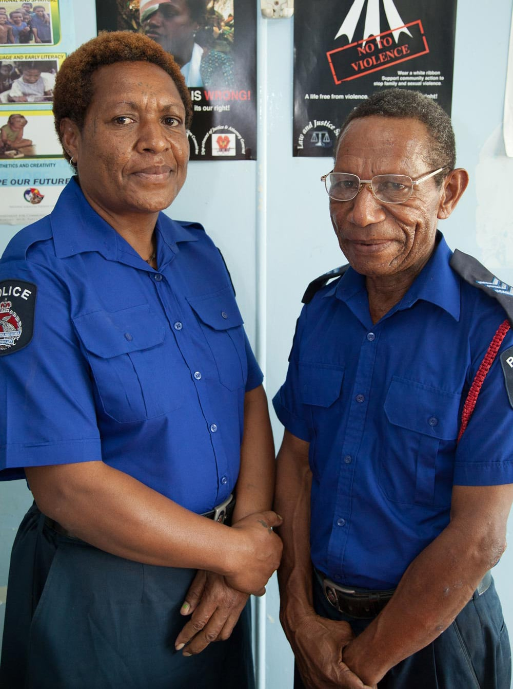
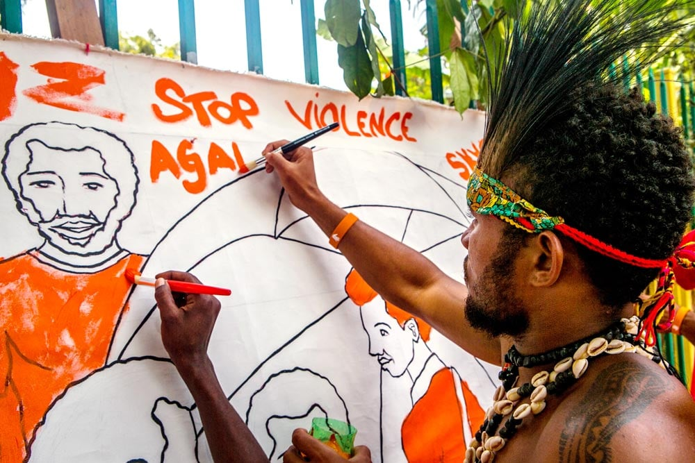
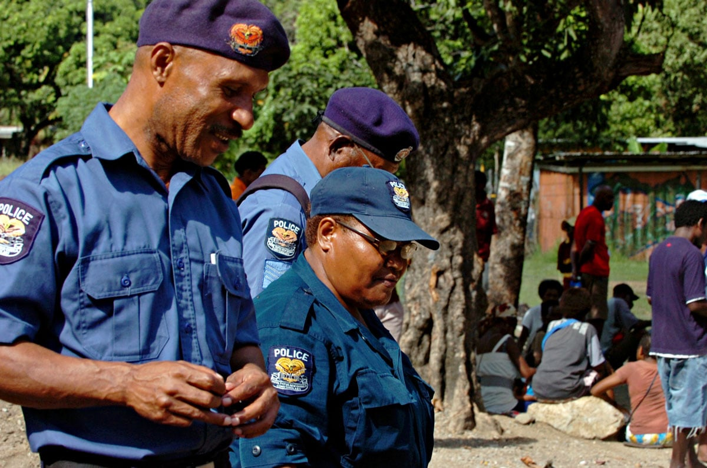
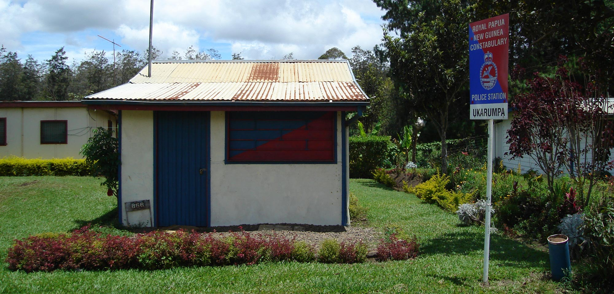
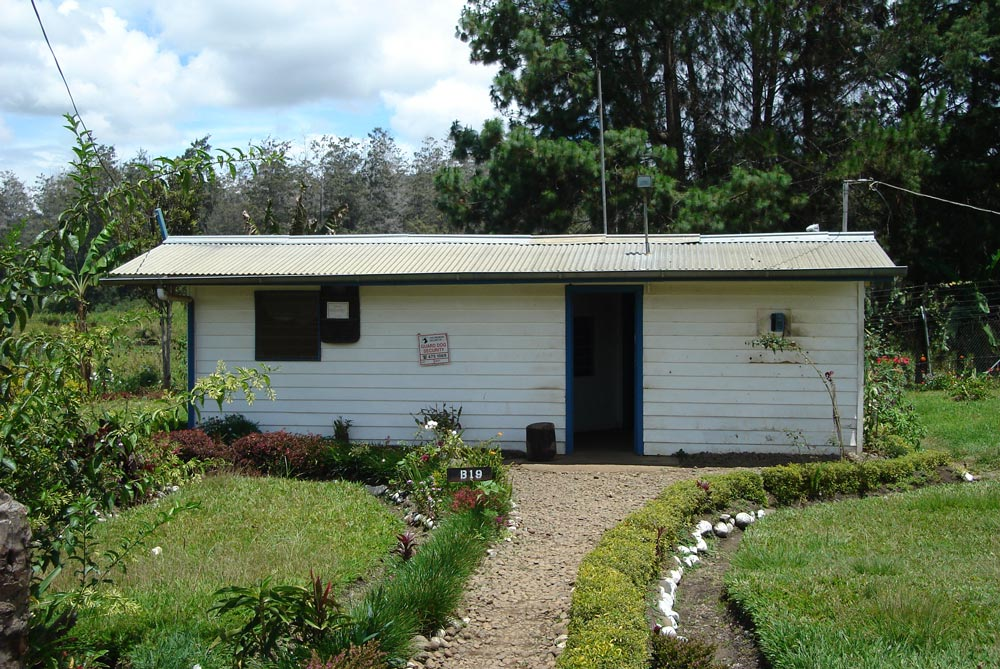

INTRODUCTION
Concerns about personal security have been prominent in Papua New Guinea for many years. Personal security figures regularly in travel advisories issued by foreign governments. International news coverage of Papua New Guinea is often about violence or crime, reinforcing the country's reputation as a dangerous and lawless place. A visitor to Port Moresby, the sprawling national capital, sees evidence of this in the elaborate security arrangements that shape the urban landscape. Drivers of insecurity in this young nation are complex and multidimensional, stemming from the legacies of a recent colonial past, along with the ongoing challenges of state consolidation and the uneven effects of economic globalisation.
The main security threats are non-traditional, including urban crime, gender-based violence, corruption, arms trafficking, border protection, resource poaching, climate change, natural disasters, and transnational crime. Although some view China's growing presence as a potential threat, its activities in Papua New Guinea have been largely confined to diplomacy, development assistance and investment. Prime Minister Peter O'Neill has acknowledged the absence of any "distinct conventional external threat", while PNG's National Security Policy recognises the developmental and political character of the country's security challenges.

U.S. Marines, Sailors and soldiers from Papua New Guinea kick off Exercise Koa Moana. Photo: US Pacific Command (flickr)
Papua New Guinea is one of the world's most complex development environments. Its population of almost 8 million people is dispersed across a vast and challenging topography, rendering effective administration and economies of scale hard to achieve. Around 85 per cent live in rural areas, reliant on a combination of subsistence agriculture and cash-cropping. Although it has the lowest urbanisation rate among Pacific Island countries, Papua New Guinea has the biggest urban population, at around 800 000 to 1 000 000 people. Well over half this number live in Port Moresby, making it the largest city in the region. While its population has more than trebled since independence in 1975, shortage of land and affordable housing has led to the growth of large and poorly serviced informal settlements. Limited employment opportunities and the high cost of living add to the hardships facing many urban residents.
Papua New Guinea is richly endowed in natural resources, ranging from fisheries and timber to oil, gas and high-value metals such as copper, gold, and nickel. However, despite over a decade of sustained economic growth - averaging 6.2 per cent from 2002 to 2014 - resource poaching, corruption, and maladministration have diluted the economic benefits and these have not been converted into broader development gains. While there has been progress in some areas, social and economic indicators remain disappointing, with Papua New Guinea ranked a lowly 154 out of 185 countries in the 2016 Human Development Index. Although by no means inevitable, large-scale extractive projects in Papua New Guinea have also been associated with conflict stresses and social corrosion, as demonstrated most vividly in the Bougainville Crisis.
Disappointing development outcomes highlight the fragilities of the PNG state and the politics that have shaped its post-independence development. Much has been said about Melanesian politics, including its 'unbounded' character with weak parties, and lack of policy coherence. A growing proportion of public resources have been channelled into poorly regulated discretionary funds controlled by individual politicians. This political reordering has undermined bureaucratic systems of service delivery, reinforced patterns of uneven development, and facilitated corruption by entrenching patronage as the main mechanism for the delivery of 'development' and other services.
The small Papua New Guinea Defence Force (PNGDF) has extremely limited capabilities. Policing and justice services are also thinly spread, leaving issues of security and dispute resolution to be managed informally in many areas, through resort to quasi-traditional approaches embedded in local communities. In areas of large-scale resource development, extractive companies often provide security services and engage with locally based police and other law and justice actors. The RPNGC has long struggled against growing problems of insecurity, with manifestly inadequate numbers and resources. Police have also been implicated in the perpetuation of violence and serious human rights abuses. The exponential growth of private security - considered by some to be the country's third-largest source of employment - reflects the security concerns of the well-off and diminishing confidence in the police.
This paper examines some of the key trends in PNG's security environment with a view to considering how they are likely to affect the country's political and economic stability. The following section briefly considers PNG's external and internal security environments and the respective challenges they pose. An outline of the most pressing 'law and order' issues follows. An examination of the struggles of public policing and rise of private security indicates the shifting landscape of security governance in Papua New Guinea and the risks and opportunities it presents.
MAIN THREATS TO SECURITY AND STABILITY: EXTERNAL AND INTERNAL
There is broad consensus that while Papua New Guinea lacks any serious external threats it is faced with increasing non-traditional threats and an urgent need to strengthen its security agencies. Papua New Guinea's National Security Policy, launched in 2013, identified the most immediate challenges as: law and order; graft, corruption and good governance; human rights abuses and gender-based violence; lack of border control; natural disasters and climate change; arms trafficking and proliferation; illegal poaching of resources; drugs, alcohol and substance abuse; microbial attacks on plants, animals and human lives; and medical emergencies including HIV and AIDS, tuberculosis and malaria. Second order threats include external and internal military aggression, cyberattacks, food security, land security, population growth, and climate change.

Police officers Peter and Malen look after the cases at the Family and Sexual Violence Unit at Waigani Police Station, Port Moresby PNG. Photo: Department of Foreign Affairs and Trade (flickr)
In the absence of conventional threats, the PNGDF has struggled to carve out a traditional security role or establish a niche function such as Fiji's international peacekeeping operations. A long history of disciplinary problems is believed to stem more from leadership issues and grievances over working conditions than from overt political ambitions. Even during the tumultuous Sandline Affair in 1997, when the PNGDF rebelled against a decision to deploy foreign mercenaries in Bougainville, no attempt was made to take over government. The prospect of a military coup in Papua New Guinea is unlikely as such a small force - just over 2000 personnel - would not achieve anything more than a temporary and geographically circumscribed takeover of government in such a large and politically fractious country.
Arguably the most critical role for the PNGDF is in protecting PNG's land and maritime borders from the non-traditional challenges, such as resource poaching and gun smuggling, identified in the 2013 White Paper. Such a task is complicated by the small size of the PNGDF and PNG's extensive maritime economic exclusive zone (EEZ), as well as its long land border with Indonesia. Although Australian-supplied patrol boats have greatly assisted maritime surveillance, lost fishing revenues from illegal, unreported, and unregulated fishing in the zone are believed to be considerable. Likewise, smuggling in illicit goods such as guns across PNG's only land border is common and has contributed to the proliferation of illegal firearms. In response to these risks, the 2013 White Paper proposed to significantly increase the size of the PNGDF, with a target of 10 000 personnel by 2030. Analysts have cautioned that a much larger force might be tempted to adopt a more political role, while the actual prospects of such an expansion have receded with the deterioration of PNG's fiscal position.
The PNGDF also assists civil authorities, notably the police, in providing security for significant national events, such as PNG's elections and the forthcoming APEC summit. It has been legally possible for the PNGDF to deploy internationally since 2010, with its most significant off-shore deployment in recent years being the Regional Assistance Mission to Solomon Islands (RAMSI).
LAW AND ORDER CHALLENGES
Law and order problems are identified in the National Security Policy as posing a "grave and immediate danger to national life". This broad term is commonly used to cover crime, violence and insecurity, as well as government responses to these problems. In this section, I briefly consider some of these problems, including some of their newer manifestations such as transnational crime.
URBAN VIOLENCE
Concerns over a growing urban crime problem began back in the 1960s as the colonial restrictions over the movement of Papua New Guineans were removed and young rural migrants flocked to Port Moresby. Papua New Guinea's towns have since acquired notoriety as violent and crime-ridden places, with Port Moresby and Lae labelled as two of the world's most dangerous cities. Insecurity is evident in the fortifications, razor-wire, and proliferation of private security. In Port Moresby, violent crime has been long been attributed to the activities of raskol gangs, comprising disaffected young men from the city's burgeoning settlements. During the 1980s and 1990s cyclical patterns of localised crime waves followed by heavy-handed police operations played out violently in the national capital.
The full scale of crime and violence in Papua New Guinea is difficult to assess, given the limited coverage and poor quality of police and other data. Although survey findings and the weight of anecdotal evidence suggest that violence victimisation rates are high by global standards, other research indicates there was an overall reduction and stabilisation of crime during the first decade of the new millennium. Levels of unreported crime, including rape and other sexual offences, are extremely high, particularly in rural areas where access to police is limited. Significant variations exist between urban and rural settings, as well as within regional, rural, and urban contexts.
ILLEGAL FIREARMS
Illegal firearms, home-made and factory produced, are used regularly in criminal activities and tribal conflicts. Tribal conflict, still predominantly a Highlands phenomenon, has changed considerably over the years. The use of high-powered weapons, along with mercenaries or 'hire men' and guerrilla tactics, has dramatically altered the ground rules of tribal fighting and fuelled escalating cycles of conflict that are difficult to resolve through either policing interventions or traditional peacemaking. Higher numbers of casualties associated with the new technologies of violence make it harder to achieve the equivalence between warring factions that was integral to traditional approaches. In addition to familiar triggers such as land disputes, PNG's volatile elections and intense local contestation around resource development projects provide newer settings for this kind of conflict.
GENDER-BASED VIOLENCE

16 Days of Activism 2016. Photo: UN Women/Johaness Terra (flickr)
Gender-based violence is endemic throughout Papua New Guinea. Recent years have seen important interventions in law reform, public awareness, and an array of practical programs involving community groups, NGOs, government agencies, businesses and international donors. However, violence against women and girls, including sexual abuse, remains an enormous challenge. Socially embedded attitudes are slow and difficult to change, while the adverse effects of economic globalisation, including deepening inequalities, disproportionately affect women. Human Rights Watch claims that family violence has reached 'emergency' levels in Papua New Guinea, with more than two-thirds of women experiencing some form of it, and, in some areas, 80 per cent of men admitting to committing sexual violence against their partners. An Australian Federal Police officer attached to the RPNGC described levels of domestic violence as "pandemic, equalling something in a war zone". Reporting rates for crimes of violence against women are extremely low, reflecting, in part, a lack of confidence in police follow-up. Sorcery-related violence, often directed at women, has become another major concern and precipitated a concerted campaign of law reform, awareness, and other interventions by government, churches, donors and NGOs.
GRAFT AND CORRUPTION
The National Security Policy identifies 'graft and corruption' as a major threat that if left unaddressed "will destroy PNG government and [its] institutions, ruin development programs, create instability and ultimately cause [it] to become a failed state". Few would disagree. Corruption has been described by a former PNG Prime Minister as "systematic and systemic". The Parliamentary Public Accounts Committee found "evidence of misappropriation, fraud, negligence and disregard for the law and for the welfare of the state by public servants at every level". The same body estimated that around 25 per cent of the country's GDP is siphoned off through corruption. Windfall revenues associated with the recent mining boom, and the weakening of institutional oversight and regulation, have contributed to heightened levels of corruption. However, there are also signs of growing levels of public anger and demands for action, as demonstrated in the 2016 student-led protests.
TRANSNATIONAL CRIME
Papua New Guinea's connectivity into the global maritime network has improved and it has now become a regional shipping hub. This has increased its vulnerability to transnational crime, as accentuated by its relatively porous borders and weak institutions. This is another area where there is little reliable data. Economic globalisation has brought growing opportunities for money laundering involving politics and local and transnational networks. In 2012, the head of PNGs anti-corruption agency Investigation Task Force Sweep drew international attention to the millions of PNG kina that had allegedly been laundered into Australia by PNG elites, much of it ending up in the north Queensland property market. For its role in harbouring illicit funds, Australia was dubbed the 'Cayman Islands of the Pacific'.
RESOURCE POACHING
The National Security Policy identifies "illegal poaching of resources" as another major threat to PNG's national security. This has been a problem for many years, particularly in the logging and fisheries sectors. The cost of transfer pricing in PNG's logging industry has recently been estimated at more than US$100 million in lost tax revenue per annum, and the UK-based Chatham House claims that 70 per cent of logging in Papua New Guinea is illegal. This has been facilitated by collusion between corrupt officials and, mainly Malaysian, logging companies, and in recent years through a legal mechanism called the Special Agriculture and Business Leases (SABLs). No decisive steps have been taken to stop the deceptive land deals that enable illegal logging. There have, however, been signs of improvement in the management of the country's fisheries.
SECURITY GOVERNANCE
THE RPNGC
Policing was an integral part of the system of colonial administration that was aimed primarily at extending and consolidating government authority. This system was personified in the highly mobile patrol officer or kiap who administered a form of rudimentary community policing to widely dispersed and largely self-regulating rural populations. This approach worked reasonably well because it involved pragmatic accommodations with local forms of authority. Kiaps, who were few in number and underfunded, relied on the acquiescence of local leaders in order to accomplish their broad policing task. The RPNGC adopted their current organisational form in the 1960s as part of the larger process of institutional modernisation. For some observers, this institutional transition led to an effective withdrawal of government in many rural areas that contributed to the revival of violent forms of self-help including tribal fighting. At independence, police coverage extended to only 10 per cent of the country's land area and 40 per cent of the population.

Police in Port Moresby. Photo: Commonwealth Secretariat (flickr)
The travails of the RPNGC have provoked two broad critiques. One has been largely technical and focused on organisational aspects, such as training, management systems, budgeting, operational skills, leadership, and professionalism. This has been the orientation of successive donor-funded police capacity-building programs. Prompted by the modest outcomes of these engagements, the other critique has raised more fundamental questions around the 'fit' and 'relevance' of the current policing model in PNG's distinctive social and geographical terrain. The institutional legacy of the past is still evident in contemporary policing, and the criminal justice system more broadly: small numbers; centralisation of budget and personnel; uneven distribution of resources; violent mobile squad policing; the continuing role of informal justice practices; and the tiny proportion of cases ending up in formal court process.
The reach of the RPNGC has, if anything, diminished since independence. Although the overall population has more than trebled, the RPNGC has only grown by around 30 per cent. Figures from 2013 indicate a force of 5387 sworn uniformed officers, while unconfirmed estimates put its present size at around 7000. The police-to-population ratio is small by both regional and global standards, with a 2012 estimate suggesting that it was less than half the UN's recommended minimum. Government pledges to increase the size of the RPNGC to more than 13 000 by 2020 and to 24 000 by 2030 remain unrealistic in the current fiscal climate, with new recruitment suspended in early 2017.
Limited recruitment helps explain the rapidly ageing workforce. In 2014 it was estimated around 15 per cent of serving officers had passed mandatory retirement age, while another 29 per cent would reach that age by 2018. Responses to insufficient numbers have included reliance on auxiliary and reserve police drawn from the wider community. These voluntary police work alongside regular officers. They may be sponsored by private businesses that provide allowances, uniforms, and other kinds of support. Serious allegations of corruption and other abuses have been levelled at both reserve and auxiliary police.
Most rural-based citizens rely on extended families and informal community-based approaches for everyday dispute resolution and security. Even where accessible, the police are widely viewed as unresponsive. Lack of funds to buy fuel for police vehicles is a common reason (or excuse) provided and payment is often a precondition for rendering assistance. Flat-lined police budgets cover salaries but leave little to fund operational expenses, encouraging officers to seek out informal local revenue opportunities. This can include payment for 'turning a blind eye' to alleged infringements and illegal on-the-spot fines. It also renders the police susceptible to reliance on external patrons with the risks this poses to integrity.
The growing penetration of the RPNGC by patronage networks linked to senior political actors has affected senior appointments and the conduct of investigations, and contributed to growing factionalism within the organisation. Manifestations include the high turnover of police commissioners and the dismissal or marginalisation of officers investigating serious allegations against powerful figures. The blatant obstruction faced recently by PNG's Task Force Sweep and the police anti-fraud squad is an example of an alarming trend that has damaged the standing of the RPNGC and demoralised many of its members.
Lack of public confidence also reflects fear of the police among many citizens. Police brutality and excessive use of force has been a consistent complaint over the years. Various reports have documented serious abuses of human rights, depicting an entrenched culture of criminal behaviour, brutality, and impunity within police ranks. The last major government review of the RPNGC noted that outstanding legal claims against the state arising from police actions amounted to more than double the total police budget in 2004. The review found substandard police leadership, inadequate resourcing, poor budgeting, a culture of indiscipline and unaccountability, political interference in police operations, and an almost complete breakdown in public trust.

Unoccupied Police Station, Ukarumpa. Photo: Kahunapule Michael Johnson (flickr)
FILLING THE GAP? THE RISE OF PRIVATE SECURITY
Private security has emerged as a way of filling the security gap. The corporate and business sector has been a major driver of security services, both as a consumer and supplier. The number of firms identifying crime as a major constraint to their businesses in Papua New Guinea is more than four times the regional average in East Asia and the Pacific, and comparable with countries such as El Salvador, Venezuela, and the Democratic Republic of Congo. Business investment in security personnel and infrastructure is significantly higher in Papua New Guinea than the average for the East Asia and Pacific, Sub-Saharan Africa and Latin American regions.
RAPID GROWTH OF THE SECTOR
The number of companies licensed by PNG's Security Industries Authority (SIA) grew from 173 in 2006 to 462 in 2014 with a total workforce of around 30 000 security guards. In December 2016, there were 464 licensed companies, while the number of guards had dropped to around 27 709 with the winding down of the LNG construction phase. The number of guards employed by licensed companies is over three times the number of serving police officers and more than the combined strength of PNG's three 'disciplined' services (RPNGC, PNGDF and the correctional service). These figures do not include the large number of unlicensed security companies and personnel, estimated by the SIA to be around 219 unlicensed companies with 7649 guards.

The Ukarumpa Guard Dog Security office. Photo:
Kahunapule Michael Johnson (flickr)
Companies vary from transnational security corporations with global reach, large locally owned firms, through to numerous small operators. The three largest companies in 2016 were Guard Dog Security (around 3622 guards), G4S Secure Solutions Ltd (around 3390) and Black Swan International (around 780). Security at the controversial Australian-funded refugee processing centre on Manus is provided by Wilsons Security, which had around 622 employees on the island in 2013. Companies are concentrated in PNG's urban centres, but also operate in rural areas where major resource projects are located. Services provided include static asset protection, escorting mobile assets, close personal protection, security training, security assessments, emergency evacuations, rapid response capabilities, and the supply and monitoring of electronic surveillance systems. The value of the industry has been estimated as between PNGK800 and PNGK1 billion. Large extractive companies also often have substantial in-house security capabilities, for example in 2015 around 500 security personnel were employed at the Porgera mine.
REGULATION OF THE SECTOR
Papua New Guinea is one of two Pacific Island countries that have dedicated legislation to regulate the private security industry (the other being Tonga). The Security (Protection) Industry Act 2004 established the SIA, with responsibility for issuing and revoking operating licences. Its effectiveness in practice has been hampered by limited capacity and the pace of industry growth.
The relationship between the private security sector and the RPNGC is generally close, particularly with larger companies. This has been viewed as a potential opportunity for assisting the under-resourced police, but also as a potential threat to their integrity. Strong informal networks exist between private security companies and the RPNGC, with many senior industry employees having previous police (or military) experience in Papua New Guinea or overseas. Bigger operators regularly assist the RPNGC by, for example, providing fuel and tyres for vehicles, while informal networks facilitate intelligence sharing. Collaboration between the police and business community has a long history in Papua New Guinea. This includes policing services provided to logging and mining projects operating in remote rural locations. These are often covered by formal agreements between the parties and might include the payment of allowances, transport costs, and provision of meals and accommodation. Beyond these authorised arrangements, allegations are regularly made of serving officers illegally moonlighting as private security, often while wearing uniforms and using police equipment.
There are concerns about the potentially negative effects of the expanding private security sector on the RPNGC. These include sensitivities about private providers encroaching on areas that should remain the preserve of the police, concerns that the growing prominence of private providers diverts attention away from the need to strengthen the police, as well as perceptions that public-private security collaborations might entail privileging powerful business interests over responsibilities to ordinary citizens. For example, the National Security Policy stated foreign-owned security companies engaging "in areas designed for PNG state agencies" is a concern and risks undermining "the state's ability and authority to deliver public safety and security".
RISKS AND OPPORTUNITIES
The growth in private security is connected to broader changes in PNG's political economy. Increasing demand for private security presents an attractive opportunity for both foreign and local investors, as well as creating significant numbers of low-paid jobs for Papua New Guineans. The proliferation of security companies is not just a result of foreign companies entering the market but also the growth of domestic investment and entrepreneurship, ranging from landowner groups to wealthy members of PNG's political and business elite who have established or bought into some of the larger companies.
Growing elite investment in private security raises the critical issue of the disincentive this may present to invest in public security agencies. While investing in effective law enforcement capabilities might be viewed cynically as not in the interests of the more predatory elements of the political elite, the growing investment in private security might be another factor behind the long-term disinvestment in public security. Another issue that would merit further research is the extent to which individual MPs are using their constituency development funds on private security provision. Broader concerns about the potential for conflict of interests and corruption among the political actors controlling such funds apply equally in the case of security expenditure.
For a major donor such as Australia that has invested millions of dollars into capacity-building engagements with the RPNGC over the years, the massive expansion of private security and its impact on public policing has attracted surprisingly little interest. While there are many potential risks, the growth of private security also presents opportunities for addressing some of PNG's problems of insecurity. This would mean moving beyond viewing private security primarily as a gap-filling response to the inadequacies of public policing by those who can afford such services. Instead consideration could be given to how more deliberate and regulated engagement between the two sectors might contribute to developing the capabilities of the RPNGC and improving the quality and reach of security provision for all Papua New Guineans, particularly its most vulnerable groups.
CONCLUSION
The major changes being experienced in Papua New Guinea associated with rapid economic globalisation are likely to continue to generate stresses and divisions and these will contribute to many of the kinds of insecurity touched upon in this paper. It is unlikely that these will be overcome anytime soon. As the National Security Policy recognised, holistic responses to PNG's security threats need to go beyond conventional law and order responses. Many of PNG's law and order problems are symptomatic of more complex processes of change and contestation that are essentially developmental and political in character. There are no easy or quick fixes. Ultimately, a system of government and political leadership capable and committed to delivering more equitable development outcomes and improved social and economic opportunities for all Papua New Guineans will see a diminution in many sources of contemporary stress. There are few signs of that happening in the near future.
In terms of the security governance issues that have been a major focus of this paper, it has long been clear that PNG's security agencies have extremely limited capabilities, particularly the police as the frontline agency in internal security. Many years of government neglect has left the RPNGC ill equipped to police PNG's complex and rapidly changing social landscape. Patronage networks and increasing factionalism have damaged the standing and integrity of an already weak organisation. The growth of private security provides an alternative to those who can afford such services, but does little to directly address the security needs of those who cannot. Moreover, there is a real risk that increasing investment in private security on the part of PNG's political elite provides a disincentive to invest in public security, thereby perpetuating the continued decline of public policing.
Such a scenario would lead to an increasingly fragmented security landscape and one where the police become increasingly beholden to political and other powerful patrons. This would leave PNG's poorest and weakest groups most vulnerable to insecurity. While the growth of private security presents a number of risks, it is also important to see it as providing opportunities to develop more holistic approaches to security governance. More considered and regulated engagement between private and public providers could contribute to both improving the capabilities and performance of the RPNGC and the quality and reach of security provision for all Papua New Guineans.
NOTES
[22] Sean Dorney, The Embarrassed Colonialist (Sydney: Penguin Random House Australia, 2016), 46.
[23] PNG-Australia Law and Justice Partnership, "Royal Papua New Guinea Constabulary", Fact Sheet 9, July 2013, 3.
[24] D Connery and K Claxton, Shared Interests, Enduring Cooperation: The Future of Australia-PNG Police Engagement (Canberra: Australian Strategic Policy Institute, Special Report, October 2014), 26.
[25] Miriam Zarriga, "Police Recruitment for 2017 Suspended", PNG Post-Courier, 9 January 2017, http://postcourier.com.pg/police-recruitments-suspended/.
[26] Connery and Claxton, Shared Interests, Enduring Cooperation: The Future of Australia-PNG Police Engagement, 26.
[27] Eric Tlozek, "PNG Police Fighting over Anti-corruption Arrest of Government Officials", ABC News, 18 April 2016, http://www.abc.net.au/news/2016-04-18/png-police-government-anti-corruption-arrests/7335952.
[28] Human Rights Watch, Making their Own Rules: Police Beatings, Rape and Torture of Children in Papua New Guinea, 30 August 2005.
[29] Government of Papua New Guinea, Report of the Administrative Review of the Papua New Guinea Constabulary (2004), 48.
[30] S Lakhani and A Willman, Gates, Hired Guns and Mistrust: Business as Unusual (Washington DC: World Bank, 2014).
[31] PK Isari, "Information Paper on the Security Industry in PNG", Security Industries Authority, 20 April 2017.
[33] Government of Papua New Guinea, National Security Policy: Safe, Secure and Prosperous Papua New Guinea, 37.
Top image: UNiTE walk to end violence against women, Port Moresby, 25 November 2015. Photo: UN Women (flickr)
ABOUT THE AUTHOR
Dr Sinclair Dinnen is a senior fellow with the State, Society and Governance in Melanesia Program at the Australian National University. He taught previously at the University of Papua New Guinea and was a research fellow at PNG's National Research Institute. He has a PhD from the ANU, which was published as Law and Order in a Weak State: Crime and Politics in Papua New Guinea (University of Hawai'i Press, 2001). Sinclair has undertaken extensive research and policy work in the Melanesian Pacific, particularly in Papua New Guinea and Solomon Islands. His research interests include law and justice reform, policing, conflict and peacebuilding, politics, development and state-building. His most recent book (co-edited with Matthew Allen) is State-building and State Formation in the Western Pacific (Routledge 2016).
These papers presenting a country snapshot of Papua New Guinea in 2017 were produced with the support of ExxonMobil. More